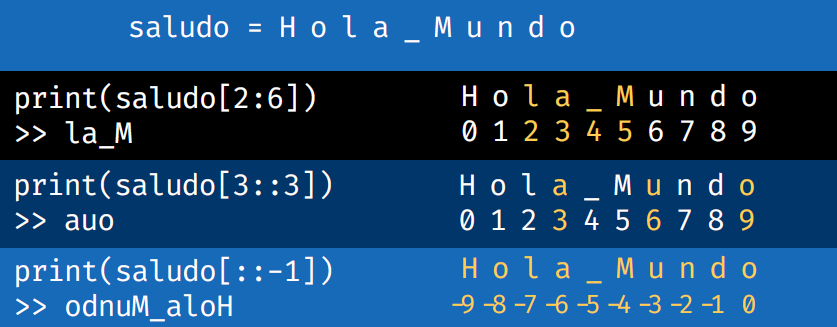

>>.python; en algunas instalaciones el lanzador equivalente es py.Los proyectos del capítulo 12 requieren instalar bibliotecas externas (pygame, pyttsx3, opencv-python, django, entre otras) con pip, preferiblemente dentro de un entorno virtual (capítulo 11).
Un programa en Python es un archivo de texto con extensión .py cuyas instrucciones se ejecutan de arriba hacia abajo. Es recomendable encapsular la lógica principal en una función y ejecutarla únicamente cuando el archivo se lanza de forma directa, no cuando se importa desde otro:
def run():
palabra = input("Escribe una palabra: ")
print(palabra)
if __name__ == "__main__":
run()Python delimita los bloques mediante la indentación, que es obligatoria. La guía de estilo oficial recomienda cuatro espacios por nivel, líneas de un máximo de 79 caracteres, nombres de funciones y variables en minúscula con guiones bajos, nombres de clases en formato CapWords y constantes en mayúsculas (van Rossum et al., 2001). Por esa razón, un valor que no cambia se nombra en mayúsculas:
LIMITE = 1000La guía de estilo se denomina PEP 8 (Python Enhancement Proposal 8) y la documentación oficial del lenguaje se encuentra en docs.python.org/3 (Python Software Foundation, s. f.-c). Al ejecutar import this en la consola se muestra el «Zen de Python», un conjunto de principios de diseño del lenguaje.
La función input() permite que el programa reciba datos del usuario durante su ejecución. Muestra un mensaje y devuelve lo escrito.
nombre = input("Dime tu nombre: ")
print("Tu nombre es " + nombre)
>> Dime tu nombre: Yasmani
>> Tu nombre es YasmaniTodo valor devuelto por input() es una cadena de texto, incluso si el usuario escribe números. Cuando se requiere un número, el dato debe convertirse:
edad = int(input("¿Cuántos años tienes? "))
altura = float(input("¿Cuál es tu altura en metros? "))Para recibir varios valores en una misma línea se combina input() con el método split():
x, y = input("Introduce dos números separados por espacio: ").split()
x = int(x)
y = int(y)
print("La suma es:", x + y)La función print() muestra información en la consola. Las cadenas pueden concatenarse con el operador + e incluir secuencias de escape, que son combinaciones que comienzan con una barra invertida.
Tabla 1Secuencias de Escape de Uso Frecuente
| Secuencia | Efecto |
|---|---|
\" | Imprime comillas dobles. |
\n | Inserta un salto de línea. |
\t | Inserta un tabulador. |
\\ | Imprime una barra invertida. |
Nota. Adaptado de las notas del autor.
Existen tres formas de combinar texto y variables. La concatenación simple une cadenas; el método format() sustituye marcadores {}; y las cadenas literales formateadas (f-strings), precedidas por la letra f, incorporan expresiones directamente entre llaves.
print("hola" + " " + "mundo")
>> hola mundo
print("Mi auto es {} y de matrícula {}".format(color_auto, matricula))
print(f"Mi auto es {color_auto} y de matrícula {matricula}")Las f-strings admiten además un especificador de formato después de dos puntos; por ejemplo, f"{math.pi:.3f}" muestra el número pi con tres decimales (Python Software Foundation, s. f.-b).
La función type() devuelve el tipo del valor almacenado en una variable:
num1 = 7
print(type(num1))
>> <class 'int'>La conversión entre tipos se realiza con las funciones propias de cada tipo. En los ejemplos de la tabla, la variable pesos almacena una cantidad de dinero.
Tabla 2Funciones de Conversión de Tipos
| Expresión | Resultado |
|---|---|
pesos = float(pesos) | Convierte a número decimal. |
pesos = int(pesos) | Convierte a número entero. |
pesos = str(pesos) | Convierte a cadena de caracteres. |
dolares = round(dolares, 2) | Redondea a un número de decimales determinado. |
Nota. Adaptado de las notas del autor.
Tabla 3Operadores y Funciones Aritméticas
| Operación | Símbolo o función |
|---|---|
| Suma | + |
| Resta | - |
| Multiplicación | * |
| División | / |
| Cociente (división entera) | // |
| Módulo (residuo) | % |
| Potencia | ** |
| Raíz cuadrada | **0.5 |
| Valor absoluto | abs() |
Nota. Adaptado de las notas del autor.
if __name__ == "__main__" controla su ejecución directa.input() siempre devuelve texto; debe convertirse con int() o float() si se necesita un número.Una cadena (string) es una secuencia de caracteres. Cada carácter ocupa una posición numerada a partir de cero, y también puede numerarse desde el final con números negativos. Las cadenas son inmutables: los métodos que las «modifican» devuelven una cadena nueva.
nombre = "Yasmani"
print(nombre[0]) # primer carácter
print(len(nombre)) # número de caracteresEl método index() localiza un carácter o fragmento y devuelve su posición; admite posiciones de inicio y fin de búsqueda. El método rindex() busca de derecha a izquierda.
mi_texto = "Esta es una prueba"
print(mi_texto.index("n")) # 9
print(mi_texto.index("a", 5)) # 10
print(mi_texto.index("a", 5, 16)) # 10
print(mi_texto.rindex("a")) # 17El corte (slicing) extrae porciones mediante la sintaxis cadena[inicio:fin:paso]. El índice final no se incluye, y un paso negativo recorre la cadena en sentido inverso.
Figura 1Porciones de una Cadena Mediante Slicing

Nota. Imagen de las notas del autor.
Los métodos de análisis consultan propiedades de una cadena sin alterarla.
Tabla 4Métodos de Búsqueda y Conteo en Cadenas
| Método | Descripción | Ejemplo |
|---|---|---|
count() | Cuenta las veces que aparece un fragmento. | "Hola mundo".count("Hola") → 1 |
find() | Devuelve la posición del fragmento, o -1 si no existe. | "Hola mundo".find("world") → -1 |
index() | Como find(), pero lanza ValueError si no lo encuentra. | "Hola".index("l") → 2 |
rfind(), rindex() | Buscan desde el final de la cadena. | "C:/python36/python.exe".rfind("/") → 11 |
startswith(), endswith() | Indican si la cadena empieza o termina con el fragmento dado. | "Hola mundo".startswith("Hola") → True |
Nota. Adaptado de una hoja de referencia del curso (Escuela Directa, s. f.).
Tabla 5Métodos de Verificación de Contenido
| Método | Devuelve True si todos los caracteres son… | Ejemplo |
|---|---|---|
isdigit() | dígitos | "abc123".isdigit() → False |
isnumeric() | numéricos (incluye, por ejemplo, fracciones) | "1234".isnumeric() → True |
isdecimal() | dígitos decimales del 0 al 9 | "1234".isdecimal() → True |
isalnum() | alfanuméricos | "abc123".isalnum() → True |
isalpha() | alfabéticos | "abc123".isalpha() → False |
islower() | minúsculas | "abcdef".islower() → True |
isupper() | mayúsculas | "ABCDEF".isupper() → True |
isprintable() | imprimibles (no son caracteres especiales) | "Hola \t mundo!".isprintable() → False |
isspace() | espacios | "Hola mundo".isspace() → False |
Nota. Adaptado de una hoja de referencia del curso (Escuela Directa, s. f.).
Dado que las cadenas son inmutables, los métodos de transformación no actúan sobre el objeto original, sino que devuelven uno nuevo.
Tabla 6Métodos de Transformación de Cadenas
| Método | Descripción | Ejemplo |
|---|---|---|
capitalize() | Primera letra en mayúscula. | "hola mundo".capitalize() → 'Hola mundo' |
upper(), lower() | Todo en mayúsculas o en minúsculas. | "Hola Mundo!".upper() → 'HOLA MUNDO!' |
swapcase() | Invierte mayúsculas y minúsculas. | "Hola Mundo!".swapcase() → 'hOLA mUNDO!' |
replace() | Reemplaza un fragmento por otro. | "Hola mundo".replace("mundo", "world") → 'Hola world' |
strip(), lstrip(), rstrip() | Eliminan espacios al inicio y al final, solo al inicio o solo al final. | " Hola mundo! ".strip() → 'Hola mundo!' |
center(), ljust(), rjust() | Alinean la cadena al centro, a la izquierda o a la derecha; el segundo argumento indica el carácter de relleno. | "Hola".center(10, "*") → '***Hola***' |
encode() | Codifica la cadena y devuelve un objeto de tipo bytes. | "Hola mundo".encode("utf-8") → b'Hola mundo' |
Nota. Adaptado de una hoja de referencia del curso (Escuela Directa, s. f.).
Tabla 7Métodos de Separación y Unión de Cadenas
| Método | Descripción | Ejemplo |
|---|---|---|
split() | Divide la cadena por un separador (por defecto, espacios); un segundo argumento limita las divisiones. | "Hola mundo!\nHello world!".split() → ['Hola', 'mundo!', 'Hello', 'world!'] |
splitlines() | Divide la cadena en cada salto de línea. | "Hola mundo!\nHello world!".splitlines() → ['Hola mundo!', 'Hello world!'] |
partition() | Devuelve una tupla con lo anterior a la primera aparición del separador, el separador y lo posterior. | "Hola mundo. Hello world!".partition(" ") → ('Hola', ' ', 'mundo. Hello world!') |
rpartition() | Igual que partition(), pero desde el final. | "Hola mundo. Hello world!".rpartition(" ") → ('Hola mundo. Hello', ' ', 'world!') |
join() | Une los elementos de una lista usando la cadena como separador. | ", ".join(["C", "C++", "Python", "Java"]) → 'C, C++, Python, Java' |
Nota. Adaptado de una hoja de referencia del curso (Escuela Directa, s. f.).
[inicio:fin:paso].find() devuelve -1 si no encuentra el fragmento, mientras que index() lanza un error.Python ofrece cuatro colecciones integradas que almacenan varios valores en una sola variable: listas, tuplas, diccionarios y conjuntos. Se diferencian por tres propiedades: si pueden modificarse después de crearse (mutabilidad), si conservan un orden y si admiten elementos repetidos.
Tabla 8Comparación de las Colecciones Integradas
| Colección | Sintaxis | Mutable | Ordenada | Admite duplicados |
|---|---|---|---|---|
| Lista | [1, 2, 3] | Sí | Sí | Sí |
| Tupla | (1, 2, 3) | No | Sí | Sí |
| Diccionario | {"a": 1} | Sí | Sí, por orden de inserción | Claves únicas; valores repetibles |
| Conjunto (set) | {1, 2, 3} | Sí | No | No |
Nota. Elaboración propia a partir de las notas del autor y de Python Software Foundation (s. f.-a).
Una lista es una secuencia ordenada y mutable de objetos de cualquier tipo: cadenas, números, booleanos o incluso otras listas.
lista_1 = ["C", "C++", "Python", "Java"]
print(lista_1[1:3]) # indexado con [inicio:fin:paso]
>> ['C++', 'Python']
print(len(lista_1)) # número de elementos
>> 4
print(lista_1 + lista_2) # concatenación
>> ['C', 'C++', 'Python', 'Java', 'PHP', 'SQL', 'Visual Basic']Tabla 9Métodos Básicos de las Listas
| Método | Función | Ejemplo |
|---|---|---|
append(x) | Agrega un elemento al final. | lista_1.append("R") |
pop(i) | Elimina y devuelve el elemento de la posición i (por defecto, el último). | lista_1.pop(4) → 'R' |
sort() | Ordena la lista en el mismo objeto. | lista_3.sort() |
reverse() | Invierte el orden de los elementos. | lista_4.reverse() |
Nota. Adaptado de las notas del autor.
Los métodos que modifican la lista en su lugar, como sort(), insert() o remove(), devuelven None; por eso la expresión lista = lista.sort() es un error frecuente (Python Software Foundation, s. f.-a).
La comprensión de listas es una sintaxis breve para crear una lista nueva a partir de los valores de otra secuencia. Consiste en una expresión, una cláusula for y, de forma opcional, una condición if. La brevedad se logra a costa de una menor legibilidad cuando la expresión es compleja.
nueva_lista = [expresion for item in iterable if condicion]
# Caso con else: la condición se coloca antes del for
nueva_lista = [expresion if condicion else otra_expresion for item in iterable]
nueva_lista = [num**2 for num in range(10) if num < 5]
print(nueva_lista)
>> [0, 1, 4, 9, 16]Una tupla almacena varios elementos en una sola variable. Es ordenada, admite duplicados y es inmutable: sus elementos no pueden reasignarse una vez creada. Esa característica la hace más eficiente en memoria y la protege de modificaciones accidentales.
mi_tupla = (1, "dos", [3.33, "cuatro"], (5.0, 6))
print(mi_tupla[3][0]) # indexado
>> 5.0
lista_1 = list(mi_tupla) # conversión (casting): ahora es mutable
a, b, c, d = mi_tupla # desempaquetado
print(c)
>> [3.33, 'cuatro']La inmutabilidad se refiere a la tupla, no a los objetos que contiene: una tupla puede incluir una lista, y esa lista sí puede modificarse (Python Software Foundation, s. f.-a).
Un diccionario almacena información en pares clave: valor. Se accede a cada valor por el nombre de su clave, no por un índice numérico. Es mutable, no admite claves repetidas y, a partir de Python 3.7, conserva el orden de inserción.
persona = {
"nombre": "Ana",
"edad": 25,
"ciudad": "Quito"
}
print(persona["nombre"])
>> Ana
print(persona.get("correo", "No definido")) # evita errores si la clave no existe
>> No definidoLas operaciones habituales son las siguientes:
persona["edad"] = 26 # modificar
persona["profesión"] = "Ingeniera" # agregar
del persona["ciudad"] # eliminar una clave
persona.pop("edad") # eliminar y devolver el valor
datos = {} # diccionario vacío
persona = dict(nombre="Luis", edad=30)
print(persona.keys()) # dict_keys(['nombre', 'edad'])
print(persona.values()) # dict_values(['Luis', 30])El método items() devuelve pares (clave, valor), por lo que es la forma recomendada de recorrer un diccionario. Cuando el valor es una tupla, puede desempaquetarse en el mismo for.
for clave, valor in persona.items():
print(clave, ":", valor)
usuarios = {
"yasmani": ("yasmani@gmail.com", "123456"),
"juan": ("juan@gmail.com", "123456"),
}
for usuario, (correo, clave) in usuarios.items():
print(usuario, correo, clave)
>> yasmani yasmani@gmail.com 123456
>> juan juan@gmail.com 123456Los ejemplos con contraseñas en un diccionario son únicamente didácticos. En una aplicación real las contraseñas no se almacenan en texto plano.
{clave: valor for valor in iterable if condicion} # comprensión de diccionario
dic_a | dic_b # el símbolo | une un diccionario con otroLos diccionarios son adecuados cuando se necesita acceso rápido por clave, estructuras del tipo «nombre → valor» o registros con campos nombrados, por ejemplo un alumno con nombre, edad y nota.
Un conjunto es una colección mutable de elementos inmutables, sin orden y sin elementos repetidos (Python Software Foundation, s. f.-a). Se usa para eliminar duplicados y para operaciones de teoría de conjuntos. Un conjunto vacío se crea con set(), porque {} crea un diccionario.
mi_set_a = {1, 2, "tres"}
mi_set_b = {3, "tres"}Las tablas siguientes usan estos dos conjuntos como ejemplo.
Tabla 10Métodos para Modificar un Conjunto
| Método | Descripción | Ejemplo y resultado |
|---|---|---|
add(item) | Agrega un elemento. | mi_set_a.add(5) → {1, 2, 'tres', 5} |
update(set) | Inserta los elementos de otro conjunto. | mi_set_a.update(mi_set_b) → {1, 2, 3, 'tres'} |
discard(item) | Elimina un elemento; no falla si no existe. | mi_set_a.discard("tres") → {1, 2} |
remove(item) | Elimina un elemento; lanza error si no existe. | mi_set_a.remove("tres") → {1, 2} |
pop() | Elimina y devuelve un elemento arbitrario. | mi_set_a.pop() → un elemento, por ejemplo 2 |
clear() | Elimina todos los elementos. | mi_set_a.clear() → set() |
copy() | Devuelve una copia del conjunto. | mi_set_a.copy() → {1, 2, 'tres'} |
Nota. Adaptado de una hoja de referencia del curso (Escuela Directa, s. f.).
Tabla 11Operaciones entre Conjuntos
| Método | Operador | Descripción | Resultado (A y B) |
|---|---|---|---|
union(B) | | | Combina A y B sin duplicados. | {1, 2, 3, 'tres'} |
intersection(B) | & | Elementos presentes en A y en B. | {'tres'} |
difference(B) | - | Elementos que solo están en A. | {1, 2} |
symmetric_difference(B) | ^ | Elementos de A y B, excepto los comunes. | {1, 2, 3} |
isdisjoint(B) | — | True si A y B no tienen elementos comunes. | False |
issubset(B) | — | True si todos los elementos de A están en B. | False |
issuperset(B) | — | True si A contiene todos los elementos de B. | False |
Nota. Las variantes difference_update(), intersection_update() y symmetric_difference_update() aplican la operación y actualizan el conjunto original. Adaptado de Escuela Directa (s. f.) y Python Software Foundation (s. f.-a).
items().A diferencia de otros lenguajes, el bucle for de Python recorre los elementos de cualquier secuencia (cadenas, listas, tuplas, diccionarios, conjuntos, rangos) en el orden en que aparecen. La sintaxis es:
for item in iterable:
# bloque de código (la indentación es obligatoria)En cada iteración, la variable item toma el valor de un elemento del iterable y puede usarse dentro del bloque.
frutas = ["manzana", "pera", "uva"]
for fruta in frutas:
print(fruta)
for i in range(5): # del 0 al 4
print(i)
for i in range(1, 10, 2): # range(inicio, fin, paso): 1, 3, 5, 7, 9
print(i)
colores = ["rojo", "verde", "azul"]
for i, color in enumerate(colores): # recorre con el índice
print(i, color)
nombres = ["Ana", "Luis"]
edades = [20, 25]
for nombre, edad in zip(nombres, edades): # recorre varias listas a la vez
print(f"{nombre} tiene {edad} años")
for letra in "python": # recorre una cadena
print(letra)El bucle while se parece más a un condicional if que a un for: repite un bloque mientras la condición sea verdadera y se detiene cuando se vuelve False. La condición se evalúa antes de cada iteración. Admite una cláusula else, que se ejecuta cuando la condición pasa a ser falsa.
contador = 1
while contador <= 5:
print("Repetición", contador)
contador += 1
>> Repetición 1
>> ...
>> Repetición 5Si la condición nunca se vuelve falsa, el bucle es infinito. Debe verificarse que alguna instrucción del bloque modifique las variables de la condición, como contador += 1 en el ejemplo.
Tabla 12Palabras Clave de Control de Flujo
| Palabra clave | Efecto |
|---|---|
break | Sale del bucle antes de que termine de forma natural. |
continue | Omite el resto de la iteración actual y pasa a la siguiente. |
pass | No hace nada; sirve de relleno donde la sintaxis exige un bloque. |
else | En un bucle, se ejecuta solo si el bucle terminó sin break. |
return | Sale de una función y puede devolver un valor. |
Nota. Adaptado de las notas del autor.
# break: detiene el bucle
while True:
texto = input("Escribe algo (salir para terminar): ")
if texto == "salir":
break
print("Dijiste:", texto)
# continue: salta el valor 2
for i in range(5):
if i == 2:
continue
print(i)
>> 0 1 3 4
# pass: marcador de posición
def funcion():
pass # pendiente de implementar
# else en un bucle: se ejecuta porque no hubo break
for i in range(3):
print(i)
else:
print("Todo bien, sin break")El siguiente ejemplo combina varias de estas palabras clave:
while True:
dato = input("Escribe un número positivo: ")
if dato == "salir":
break
if not dato.isdigit():
print("Entrada no válida.")
continue
numero = int(dato)
if numero == 0:
pass # aquí podría añadirse lógica en el futuro
print("Número recibido:", numero)for recorre los elementos de un iterable; while repite mientras una condición sea verdadera.break, continue y pass controlan el comportamiento dentro de un bucle.else de un bucle solo se ejecuta si no hubo break.Una función es un bloque de código con nombre que puede ejecutarse varias veces. Se define con la palabra clave def, y la instrucción return finaliza su ejecución y, opcionalmente, devuelve un valor.
def imprimir_mensaje():
print("mensaje especial: ")
print("estoy aprendiendo a usar funciones")
def sumar(a, b):
return a + b
resultado = sumar(3, 4)
print(resultado)
>> 7Cuando no se conoce de antemano el número de argumentos que se pasarán a una función se emplean dos sintaxis especiales. El nombre args o kwargs no es obligatorio, pero se recomienda como buena práctica; cualquier nombre precedido por * o ** cumple la misma función.
*args agrupa en una tupla los argumentos posicionales adicionales, después de los obligatorios.**kwargs (keyword arguments) agrupa en un diccionario los argumentos con nombre, que identifican al argumento por su nombre y no por su posición.def mi_funcion(arg_1, arg_2, *args):
print(arg_1, arg_2, args)
mi_funcion("ejemplo", 25, 40, 75, 10)
>> ejemplo 25 (40, 75, 10)
def atributos_persona(**kwargs):
print(kwargs)
atributos_persona(ojos="azules", pelo="corto")
>> {'ojos': 'azules', 'pelo': 'corto'}Una función lambda es una función sin nombre, limitada a una sola expresión. Su estructura es lambda argumentos: expresión.
doble = lambda x: x * 2
print(doble(4))
>> 8El alcance determina desde dónde puede utilizarse una variable. Una variable local existe solo dentro del bloque en que se define; una variable global está disponible en todas las funciones del módulo. Pueden coexistir una variable local y una global con el mismo nombre y valores distintos.
Una función anidada (nested function) es una función definida dentro de otra. Una clausura (closure) ocurre cuando una función interna recuerda una variable de un ámbito superior aunque ese ámbito ya no exista. Para que exista una clausura deben cumplirse tres condiciones:
def crear_multiplicador(factor):
def multiplicar(numero):
return numero * factor # recuerda "factor"
return multiplicar
por_tres = crear_multiplicador(3)
print(por_tres(5))
>> 15Las clausuras aparecen con frecuencia en clases cortas y en el uso de decoradores.
def define una función y return devuelve un valor.*args recibe argumentos posicionales como tupla; **kwargs, argumentos con nombre como diccionario.Un decorador es una función que recibe otra función como parámetro, le añade comportamiento y retorna una función diferente, sin modificar el código interno de la original. Se emplea para agregar comprobaciones (por ejemplo, permisos), medir el tiempo de ejecución, registrar eventos y reutilizar código. Se aplica escribiendo @nombre_del_decorador encima de la función decorada.
def decorar_saludo(funcion):
def otra_funcion(palabra):
print("hola")
funcion(palabra)
print("adios")
return otra_funcion
@decorar_saludo
def minuscula(texto):
print(texto.lower())
def mayuscula(texto):
print(texto.upper())
mayuscula("PytHon")
minuscula("PytHon")
>> PYTHON
>> hola
>> python
>> adiosLa línea @decorar_saludo equivale a ejecutar minuscula = decorar_saludo(minuscula). Si la función original recibe parámetros, la función interna del decorador debe aceptar *args y **kwargs para transmitirlos.
Un iterable es todo objeto que puede recorrerse en un ciclo, como una lista o una cadena. Un iterador produce sus elementos de uno en uno; ahorra recursos porque puede representar secuencias y progresiones matemáticas ocupando poca memoria.
Un generador es una función especial que no devuelve todos los valores a la vez, sino que los genera uno por uno cuando se le piden. Utiliza la palabra clave yield en lugar de return: al encontrarla, pausa su ejecución y devuelve el valor; cuando se reanuda, continúa justo donde se quedó. Conserva un estado, ofrece las ventajas de un iterador con una sintaxis más sencilla y es útil para leer archivos línea por línea, procesar datos masivos o crear flujos infinitos.
def mi_generador():
x = 1
yield x
x += 1
yield x
x += 1
yield x
g = mi_generador()
print(g)
print(next(g))
print(next(g))
print("Hola mundo")
print(next(g))
>> <generator object mi_generador at 0x000001C7FF054B80>
>> 1
>> 2
>> Hola mundo
>> 3La dirección de memoria que aparece en la primera línea varía en cada ejecución. Las expresiones generadoras siguen la sintaxis de la comprensión de listas, pero con paréntesis: mientras la comprensión de listas almacena todos los elementos en memoria, la expresión generadora los entrega uno por uno.
cuadrados_lista = [n**2 for n in range(1000)] # todos los elementos en memoria
cuadrados_gen = (n**2 for n in range(1000)) # un elemento a la vezyield, produce valores bajo demanda y ahorra memoria.Una clase es una plantilla que define las propiedades (atributos) y las acciones (métodos) de los objetos creados a partir de ella. Es un concepto fundamental de la programación orientada a objetos porque permite organizar el código de forma modular y reutilizable. Un objeto (o instancia) es una entidad concreta con sus propios datos y comportamientos, creada desde una clase.
class Perro: # clase
def __init__(self, raza): # método especial que asigna el atributo "raza"
self.raza = raza
def ladrar(self): # método
print(f"{self.raza} ha ladrado")
mi_perro = Perro("Chihuahua") # objeto con el atributo "Chihuahua"
mi_perro.ladrar()
>> Chihuahua ha ladradoLos atributos son las características o datos que pertenecen a un objeto o a una clase. Los atributos de instancia son propios de cada objeto y se definen con self (por ejemplo, la raza, el color o el nombre de un perro). Los atributos de clase son comunes a todos los objetos y se definen directamente dentro de la clase.
Los métodos son funciones definidas dentro de una clase que permiten a los objetos realizar acciones con sus atributos. Existen tres tipos.
Tabla 13Tipos de Métodos en una Clase
| Tipo | Decorador | Primer parámetro | Acceso y uso |
|---|---|---|---|
| De instancia | — | self | Operan sobre un objeto y acceden a sus atributos de instancia. Son los más comunes. |
| De clase | @classmethod | cls | Se relacionan con la clase, no con las instancias; acceden a los atributos de clase. |
| Estático | @staticmethod | — | No acceden a atributos de clase ni de instancia; agrupan funciones relacionadas con la clase. |
Nota. Adaptado de las notas del autor.
class Pajaro:
alas = True # atributo de clase
def __init__(self, color, especie):
self.color = color
self.especie = especie
def caracteristicas(self): # método de instancia
print(f"Piolin es un {self.especie} de color {self.color}")
def volar(self, metros):
print(f"El pajaro vuela {metros} metros")
self.especie = "colibrí" # se pueden modificar los atributos del objeto
print(f"Ahora el pajaro es un {self.especie}")
self.caracteristicas() # se puede llamar a otros métodos de instancia
@classmethod
def poner_huevos(cls, cantidad): # método de clase
print(f"Puso {cantidad} huevos")
cls.alas = True # se puede modificar un atributo de clase
print(Pajaro.alas)
@staticmethod
def mirar(): # método estático
print("El pajaro es ciego")
piolin = Pajaro("amarillo", "canario") # objeto (instancia)
piolin.volar(5)
piolin.alas = False # modifica el atributo solo en este objeto
print(piolin.alas)
Pajaro.poner_huevos(3) # no necesita una instancia
Pajaro.mirar()
>> El pajaro vuela 5 metros
>> Ahora el pajaro es un colibrí
>> Piolin es un colibrí de color amarillo
>> False
>> Puso 3 huevos
>> True
>> El pajaro es ciegoLa instrucción piolin.alas = False crea un atributo de instancia que oculta al atributo de clase solo para ese objeto; el atributo de la clase Pajaro.alas no cambia, lo cual explica que poner_huevos() imprima True.
La herencia permite que una clase obtenga los atributos y métodos de otra. La clase original se denomina clase padre o superclase, y la que hereda, clase hija o subclase. La subclase dispone automáticamente de todo lo definido en la superclase y puede agregar elementos propios.
class Animal:
def __init__(self, edad, color):
self.edad = edad
self.color = color
def nacer(self):
print("Este animal ha nacido")
print(f"Tiene {self.edad} años y es de color {self.color}")
class Pajaro(Animal):
pass
piolin = Pajaro(2, "amarillo")
piolin.nacer()La subclase puede además añadir atributos o métodos propios, sobrescribir un método heredado para que funcione de otra manera y llamar al método original mediante super() cuando necesita conservar parte del comportamiento de la superclase.
class Animal:
def __init__(self, edad, color):
self.edad = edad
self.color = color
def nacer(self):
print("Este animal ha nacido")
def hablar(self):
print("Este animal emite un sonido")
class Pajaro(Animal):
def __init__(self, edad, color, vuelo_metros):
super().__init__(edad, color) # reutiliza el constructor de Animal
self.vuelo_metros = vuelo_metros
def hablar(self): # sobrescribe el método heredado
print(f"{self.color}")
def volar(self):
print(f"El pajaro vuela {self.vuelo_metros} metros")
class Aguila(Pajaro):
pass
mi_aguila = Aguila(30, "marrón", 5)
mi_aguila.volar()
>> El pajaro vuela 5 metrosEl polimorfismo significa que diferentes clases pueden usar el mismo nombre de método, pero cada una lo implementa a su manera. Así, un mismo código puede operar sobre objetos de clases distintas.
class Vaca:
def __init__(self, nombre):
self.nombre = nombre
def hablar(self):
print(self.nombre + " dice muuuu")
class Oveja:
def __init__(self, nombre):
self.nombre = nombre
def hablar(self):
print(self.nombre + " dice meeeeee")
animales = [Vaca("Aurora"), Oveja("Nube")]
for animal in animales:
animal.hablar()
>> Aurora dice muuuu
>> Nube dice meeeeeeLos métodos especiales (también llamados métodos «mágicos» o magic methods) son funciones cuyo nombre empieza y termina con dos guiones bajos, como __nombre__. Otorgan comportamientos particulares a los objetos y Python los invoca de forma automática en ciertas situaciones.
Tabla 14Métodos Especiales Empleados en los Ejemplos
| Método | Se invoca cuando… |
|---|---|
__init__ | se crea un objeto; inicializa sus atributos. |
__str__ | se llama a str(objeto) o print(objeto); devuelve su representación en texto. |
__len__ | se llama a len(objeto). |
__del__ | el objeto se elimina, por ejemplo con del objeto. |
Nota. Elaboración propia a partir de las notas del autor.
class CD:
def __init__(self, autor, titulo, canciones):
self.autor = autor
self.titulo = titulo
self.canciones = canciones
def __str__(self):
return f"Album: {self.titulo} de {self.autor}"
def __len__(self):
return self.canciones
def __del__(self):
print(f"Se ha eliminado la canción {self.titulo}")
mi_cd = CD("Pink Floyd", "The Wall", 24)
print(str(mi_cd))
print(len(mi_cd))
del mi_cd
>> Album: The Wall de Pink Floyd
>> 24
>> Se ha eliminado la canción The WallEl curso de referencia presenta la programación orientada a objetos como un modo de programación basado en seis pilares. Dos de ellos, la herencia y el polimorfismo, se desarrollaron en este capítulo. Los cuatro restantes tienen un carácter más conceptual:
Las notas originales remiten a cuatro artículos del blog de Escuela Directa para estudiar estos pilares: escueladirecta-blog.blogspot.com/2021/09/cohesion-pilares-de-la-programacion.html, …/2021/10/acoplamiento-pilares-de-la-programacion.html, …/2021/10/abstraccion-pilares-de-la-programacion.html y …/2021/10/encapsulamiento-pilares-de-la.html.
self), de clase (cls) o estáticos.super() permite aprovechar el comportamiento de la superclase.La función open(archivo, modo) abre un archivo y devuelve un objeto sobre el que pueden aplicarse métodos de lectura y escritura. El parámetro modo determina qué operaciones se permiten y qué ocurre con el contenido previo.
Tabla 15Modos de Apertura de Archivos
| Modo | Operaciones | Comportamiento |
|---|---|---|
"r" | Solo lectura (predeterminado) | Lanza un error si el archivo no existe. |
"r+" | Lectura y escritura | Requiere que el archivo exista. |
"w" | Solo escritura | Sobrescribe el archivo si existe; lo crea si no existe. |
"w+" | Escritura y lectura | Sobrescribe el archivo si existe; lo crea si no existe. |
"a" | Añadir contenido | Agrega al final; crea el archivo si no existe. |
"a+" | Añadir y leer | Agrega al final; crea el archivo si no existe. |
"x" | Creación exclusiva | Crea el archivo; lanza un error si ya existe. |
Nota. Adaptado de las notas del autor y de Python Software Foundation (s. f.-b).
Tabla 16Métodos de los Objetos de Archivo
| Método | Función |
|---|---|
read(bytes) | Devuelve el número de bytes indicado; sin argumento, devuelve el archivo completo. |
readline(bytes) | Devuelve una línea del archivo, limitada por el tamaño indicado. |
readlines(bytes) | Devuelve una lista con cada línea del archivo como elemento. |
write(texto) | Escribe el texto indicado en el archivo. |
writelines(lista) | Escribe el contenido de una lista de cadenas. |
close() | Cierra el archivo; no puede leerse ni escribirse después. |
Nota. Adaptado de las notas del autor.
# Escritura (sobrescribe) y lectura
archivo = open("archivo.txt", "w")
archivo.write("hola mundo")
archivo.close()
archivo = open("archivo.txt", "r")
print(archivo.read())
archivo.close()
# Añadir contenido al final
archivo = open("archivo.txt", "a")
archivo.write("hola mundo")
archivo.close()La documentación oficial recomienda emplear la palabra clave with al trabajar con archivos: el archivo se cierra correctamente al terminar el bloque, incluso si se produce una excepción. Sin ella, una escritura puede no llegar completa al disco si no se invoca close() (Python Software Foundation, s. f.-b).
with open("./ruta/del/archivo.txt", "r", encoding="utf-8") as f:
contenido = f.read()El argumento encoding="utf-8" permite que Python soporte los caracteres del español, como la «ñ» y las letras con tilde. Resulta conveniente indicarlo de forma explícita para que el programa se comporte igual en distintos sistemas operativos.
La clase Path del módulo pathlib construye rutas de archivos y carpetas de forma independiente del sistema operativo.
from pathlib import Path
base = Path.home() # carpeta personal del usuario
ruta = Path(base, "Loja", "sucre.txt")
print(ruta)
>> C:\Users\usuario\Loja\sucre.txtEl módulo os permite interactuar con el sistema operativo. El módulo shutil ofrece operaciones de alto nivel sobre archivos y carpetas completas, y resulta útil cuando os es insuficiente.
Tabla 17Funciones Frecuentes del Módulo os
| Función | Descripción |
|---|---|
os.getcwd() | Devuelve el directorio de trabajo actual. |
os.chdir(ruta) | Cambia el directorio de trabajo. |
os.listdir(ruta) | Lista los archivos y carpetas de un directorio. |
os.mkdir(nombre) | Crea una carpeta. |
os.makedirs(ruta) | Crea directorios anidados. |
os.remove(archivo) | Elimina un archivo. |
os.rmdir(carpeta) | Elimina una carpeta vacía. |
os.rename(origen, destino) | Cambia el nombre de un archivo o carpeta, o lo mueve. |
os.path.exists(ruta) | Verifica si una ruta existe. |
os.path.isfile(ruta) | Verifica si la ruta es un archivo. |
os.path.isdir(ruta) | Verifica si la ruta es un directorio. |
Nota. Adaptado de las notas del autor.
Tabla 18Funciones Principales del Módulo shutil
| Función | Descripción |
|---|---|
shutil.copy(src, dst) | Copia un archivo a otro lugar. |
shutil.copy2(src, dst) | Igual que copy, pero conserva los metadatos (fecha, permisos). |
shutil.copytree(src, dst) | Copia un directorio completo de forma recursiva. |
shutil.move(src, dst) | Mueve un archivo o directorio. |
shutil.rmtree(ruta) | Elimina un directorio y todo su contenido. |
shutil.disk_usage(ruta) | Devuelve el espacio total, usado y libre del disco. |
shutil.make_archive(nombre, "zip", carpeta) | Comprime una carpeta en un archivo. |
Nota. Adaptado de las notas del autor.
shutil.rmtree() y os.remove() eliminan de forma definitiva, sin pasar por la papelera. Conviene verificar la ruta antes de ejecutarlos.
El módulo zipfile permite crear, leer, escribir y extraer archivos ZIP.
import zipfile
# Crear un archivo ZIP y agregarle un archivo existente
with zipfile.ZipFile("archivo_comprimido.zip", "w") as zipf:
zipf.write("documento.txt")
# Extraer todo el contenido
with zipfile.ZipFile("archivo_comprimido.zip", "r") as zipf:
zipf.extractall("carpeta_destino")
# Listar el contenido
with zipfile.ZipFile("archivo_comprimido.zip", "r") as zipf:
print(zipf.namelist())Con shutil, la compresión de una carpeta se reduce a una instrucción:
import shutil
shutil.copy("archivo.txt", "copia.txt")
shutil.move("archivo.txt", "carpeta_destino/archivo.txt")
shutil.copytree("carpeta_origen", "carpeta_copia")
shutil.make_archive("backup", "zip", "carpeta_a_comprimir")with open(...) garantiza el cierre del archivo; conviene indicar encoding="utf-8".pathlib, os y shutil gestionan rutas, carpetas, copias y compresión.El manejo de excepciones permite controlar situaciones inesperadas durante la ejecución, de modo que el programa no se detenga abruptamente. Sirve para que el programa no se cierre cuando el usuario comete un error (por ejemplo, al escribir letras donde se pedía un número), para mostrar un mensaje claro y para continuar de forma controlada.
try:
# código que podría fallar
except:
# código si falla
else:
# código si no hubo error
finally:
# código que siempre se ejecutatry: contiene el código que se espera pueda lanzar un error.except: gestiona el error; si ocurre dentro del bloque try, se interrumpe su ejecución y se ejecuta lo definido en except.else: se ejecuta solo si no se lanzó ninguna excepción en el try.finally: se ejecuta siempre, se haya lanzado o no una excepción.try:
numero = int(input("Ingrese un número: "))
except ValueError:
print("Eso no es un número válido.")
else:
print(f"¡Ingresaste correctamente el número {numero}!")
finally:
print("Fin de la operación.")Si el usuario escribe un número válido, se muestra el número y «Fin de la operación». Si escribe un texto no numérico, se muestra el aviso de error y también «Fin de la operación».
Es preferible capturar el tipo de excepción concreto (except ValueError:) que usar un except: genérico, porque este último también oculta errores inesperados.
Tabla 19Excepciones Frecuentes
| Excepción | Se produce cuando… |
|---|---|
ValueError | una función recibe un valor de tipo correcto pero inadecuado, por ejemplo int("abc"). |
KeyError | se consulta una clave que no existe en un diccionario. |
IndexError | se accede a una posición fuera del rango de una secuencia. |
FileNotFoundError | se intenta abrir un archivo que no existe. |
ZeroDivisionError | se divide entre cero. |
ImportError | falla la importación de un módulo. |
KeyboardInterrupt | el usuario interrumpe el programa desde el teclado. |
Nota. Las notas originales enumeran estas excepciones junto con SyntaxError, que corresponde a un error de sintaxis detectado antes de la ejecución.
La sentencia assert verifica una condición durante la ejecución y, si es falsa, lanza un error con un mensaje. Su estructura es assert condición, mensaje de error. El método .isnumeric() de las cadenas devuelve True si el texto está formado por números, por lo que resulta útil para validar entradas.
entrada = "25"
assert entrada.isnumeric(), "Debe ingresarse un número"El depurador permite detener el programa y observar su estado. En Visual Studio Code, el procedimiento es el siguiente:
pylint es una herramienta que analiza el código Python de forma automática: busca errores de sintaxis, malas prácticas (nombres poco claros, funciones sin documentar), incumplimientos de las normas de estilo PEP 8 (nombres significativos, espacios, un máximo de 79 caracteres por línea) y código no utilizado. Además, asigna al archivo una puntuación de 0 a 10. Se instala una sola vez y luego se ejecuta sobre el archivo:
pip install pylint
pylint ejercicio_ejemplo.pyEl módulo unittest viene incluido en Python y permite crear pruebas automáticas que comprueban el funcionamiento correcto de funciones, clases y métodos. Está inspirado en JUnit y su unidad básica es el caso de prueba, que verifica una respuesta específica ante un conjunto de entradas (Python Software Foundation, s. f.-e). El procedimiento es:
import unittest.unittest.TestCase.test_; esa convención indica al ejecutor qué métodos son pruebas.unittest.main().import unittest
def sumar(a, b):
return a + b
class TestSumar(unittest.TestCase):
def test_suma_correcta(self):
self.assertEqual(sumar(2, 3), 5)
if __name__ == "__main__":
unittest.main()Al ejecutar el archivo, la salida indica OK si las pruebas pasan o señala la prueba que falló y el motivo.
Los lenguajes de programación se clasifican según su sistema de tipos en estático, dinámico, débil y fuerte. Python es de tipado dinámico, pero desde la versión 3.6 permite anotar los tipos de las variables, lo que facilita la lectura y la detección de errores:
a: int = 5
b: str = "hola"
c: bool = True
from typing import Dict, List, Tuple
numeros: List[int] = [1, 2, 3]
persona: Dict[str, int] = {"edad": 25}
punto: Tuple[int, int] = (3, 4)Las anotaciones no se verifican al ejecutar el programa. Para comprobarlas se utiliza mypy, un módulo que muestra en consola los errores de tipos y que se complementa con el módulo typing:
pip install mypy
mypy nombre_archivo.py --check-untyped-defstry/except/else/finally controlan los errores en tiempo de ejecución.assert, el depurador y pylint ayudan a detectar problemas durante el desarrollo.unittest automatiza las pruebas y mypy verifica las anotaciones de tipos.Un módulo es cualquier archivo .py que contiene funciones, clases o variables reutilizables. Un paquete es una carpeta que agrupa módulos y, tradicionalmente, un archivo __init__.py. Desde Python 3.3 este archivo ya no es obligatorio, aunque sigue considerándose una buena práctica. Un módulo es, en esencia, código escrito por otra persona (o por uno mismo) que ahorra tiempo y puede implementarse en otros programas.
# archivo: saludos.py
def hola(nombre):
return f"Hola, {nombre}!"
# archivo: main.py
import saludos
print(saludos.hola("Yasmani"))mi_proyecto/
├── calculadora/
│ ├── __init__.py
│ ├── suma.py
│ └── resta.py
└── app.py
# app.py
from calculadora.suma import sumar
print(sumar(3, 4))Un entorno virtual es un entorno de Python aislado y ligero, con su propio conjunto de paquetes; evita conflictos entre las dependencias de distintos proyectos. Suele ubicarse en una carpeta denominada venv o .venv dentro del proyecto, no debe incluirse en el control de versiones y puede eliminarse y recrearse en cualquier momento (Python Software Foundation, s. f.-f).
python -m venv venv # crear el entorno llamado "venv"
deactivate # salir del entorno virtualTabla 20Comandos para Activar un Entorno Virtual
| Terminal | Comando |
|---|---|
| Windows, PowerShell | .\venv\Scripts\Activate.ps1 |
| Windows, CMD | .\venv\Scripts\activate.bat |
| Git Bash en Windows | source venv/Scripts/activate |
| macOS y Linux (bash, zsh) | source venv/bin/activate |
Nota. Adaptado de las notas del autor y de Python Software Foundation (s. f.-f).
Cuando el entorno está activo, el prompt muestra su nombre entre paréntesis, por ejemplo (venv) C:\proyecto>.
Si PowerShell muestra el error «no puede ejecutarse el script», se resuelve ejecutando primero Set-ExecutionPolicy -Scope CurrentUser -ExecutionPolicy RemoteSigned y repitiendo la activación. Para abreviar el comando de activación, puede definirse un alias, por ejemplo alias avenv=".\venv\Scripts\activate" en Git Bash.
pip freeze: muestra los módulos instalados con sus versiones.pip install pandas: instala un módulo (en el ejemplo, pandas).pip freeze > requirements.txt: guarda las dependencias con sus versiones, para compartirlas, por ejemplo, en GitHub.cat requirements.txt: muestra el contenido del archivo.pip install -r requirements.txt: instala las dependencias guardadas (lo ejecuta la persona que recibe el proyecto).Anaconda es una distribución especializada en ciencia de datos; no se recomienda para otros campos de desarrollo. El procedimiento básico es:
pandas), seleccionarlo y pulsar Apply.La secuencia de trabajo propuesta en las notas combina Git, un entorno virtual y la verificación de tipos:
git init.python -m venv venv..gitignore y escribir en él venv/.pip install mypy..py y comenzar a trabajar.python nombre_archivo.py y revisar los tipos con mypy nombre_archivo.py --check-untyped-defs.El módulo collections ofrece tipos de datos especializados que amplían las colecciones estándar.
from collections import namedtuple, deque, Counter, defaultdict
# namedtuple: tupla con campos nombrados
Persona = namedtuple("Persona", ["nombre", "edad"])
p = Persona(nombre="Yasmani", edad=30)
print(p.nombre) # Yasmani
# deque: lista optimizada para insertar y eliminar en ambos extremos
cola = deque(["a", "b", "c"])
cola.append("d") # agrega al final
cola.appendleft("z") # agrega al inicio
cola.pop() # elimina del final
cola.popleft() # elimina del inicio
# Counter: cuenta la repetición de cada elemento
contador = Counter("abracadabra")
print(contador.most_common(2)) # [('a', 5), ('b', 2)]
# defaultdict: diccionario con valor por defecto
dic = defaultdict(int)
dic["manzanas"] += 1
print(dic["peras"]) # 0 (no lanza error)Tabla 21Clases y Funciones Comunes del Módulo datetime
| Clase o función | Descripción |
|---|---|
datetime.datetime.now() | Devuelve la fecha y la hora actuales. |
datetime.date.today() | Devuelve solo la fecha actual. |
datetime.datetime.strptime() | Convierte una cadena en un objeto datetime. |
datetime.datetime.strftime() | Convierte un objeto datetime en una cadena. |
datetime.timedelta | Permite operar con diferencias de tiempo (días, horas, etc.). |
Nota. Adaptado de las notas del autor.
import datetime
mi_tiempo = datetime.datetime.now()
mi_dia = datetime.date.today()
print(mi_dia.year, mi_dia.month, mi_dia.day)Para trabajar con zonas horarias, las notas utilizan el paquete externo pytz (pip install pytz), que se importa junto con from datetime import datetime.
Para medir el tiempo de ejecución se usan las funciones time() o perf_counter() del módulo time; la segunda es más precisa en intervalos pequeños. El módulo timeit mide con gran precisión pequeños fragmentos de código al minimizar las interferencias del sistema.
import time
inicio = time.perf_counter()
time.sleep(2) # simula una función que tarda 2 segundos
fin = time.perf_counter()
print(f"Tiempo de ejecución: {fin - inicio:.4f} segundos")
import timeit
tiempo = timeit.timeit(stmt='"-".join(str(n) for n in range(100))', number=1000)
print(f"Tiempo de ejecución: {tiempo:.6f} segundos")El parámetro stmt es el código que se ejecuta, escrito como cadena, y number es la cantidad de repeticiones para obtener un promedio más preciso.
import math
print(math.pi) # 3.141592653589793
print(math.e) # 2.718281828459045
print(math.sqrt(16)) # 4.0
print(math.pow(2, 3)) # 8.0
print(math.log(100, 10)) # 2.0
print(math.sin(math.pi / 2)) # 1.0
print(math.floor(4.7)) # 4
print(math.ceil(4.2)) # 5
print(math.fabs(-5)) # 5.0
print(math.factorial(5)) # 120El módulo re permite trabajar con expresiones regulares, que son patrones para buscar, validar o extraer texto.
Tabla 22Símbolos Comunes de las Expresiones Regulares
| Símbolo | Significado |
|---|---|
\d | Un dígito (0-9). |
\w | Un carácter alfanumérico (letra, número o guion bajo). |
. | Cualquier carácter excepto el salto de línea. |
*, +, ? | Cero o más, uno o más, cero o uno. |
{n} | Exactamente n repeticiones. |
^, $ | Inicio y fin de línea. |
Nota. Adaptado de las notas del autor.
import re
texto = "Mi número es 0991234567 y mi correo es ejemplo@email.com"
resultado = re.search(r"\d{10}", texto) # buscar un número de celular
print(resultado.group())
>> 0991234567
correo_valido = re.match(r"\w+@\w+\.\w+", "ejemplo@email.com")
print(correo_valido is not None) # validar un formato
>> True
print(re.findall(r"\d+", texto)) # todas las coincidencias
>> ['0991234567']
print(re.sub(r"\d{10}", "XXXXXXXXXX", texto)) # reemplazar patrones
>> Mi número es XXXXXXXXXX y mi correo es ejemplo@email.com.py; un paquete es una carpeta de módulos.requirements.txt permite reproducirlas.Este proyecto construye, paso a paso, un videojuego en dos dimensiones con la biblioteca pygame. Cada subsección muestra únicamente el código nuevo o modificado respecto del paso anterior; el programa completo se incluye en el anexo A. Los archivos de imagen y sonido (logo_color.png, mouse.png, veneno.png, bala.png, fondo.png, MusicaFondo.mp3, disparo.mp3 y Golpe.mp3) deben estar en la misma carpeta que el programa.
pip install pygameSe importa el paquete, se inicializa y se crea una ventana de 800 × 600 píxeles. El bucle del juego se mantiene mientras la variable se_ejecuta sea verdadera y la ventana se cierra al hacer clic en la «X».
import pygame
pygame.init() # inicializa Pygame
pantalla = pygame.display.set_mode((800, 600)) # pantalla de 800 px x 600 px
se_ejecuta = True
while se_ejecuta: # bucle del juego
for evento in pygame.event.get():
if evento.type == pygame.QUIT: # clic en la X de la ventana
se_ejecuta = Falseicono = pygame.image.load("logo_color.png")
pygame.display.set_caption("Invasión Lolera") # título de la ventana
pygame.display.set_icon(icono) # icono de la ventana
color_fondo = (255, 255, 255) # color RGB del fondo
# dentro del bucle del juego:
pantalla.fill(color_fondo) # pinta el fondo
pygame.display.update() # actualiza la pantallaimg_jugador = pygame.image.load("mouse.png") # imagen de la nave
jugador_x = 368 # posición en X
jugador_y = 536 # posición en Y
def jugador():
pantalla.blit(img_jugador, (jugador_x, jugador_y)) # dibuja la nave
# dentro del bucle, después de pintar el fondo:
jugador()Una variable de cambio guarda la velocidad horizontal. Al presionar una flecha se asigna un valor positivo o negativo, y al soltarla vuelve a cero. Además, se limita la posición para que la nave no salga de la pantalla: el máximo es 800 − 64, donde 64 corresponde al ancho de la imagen.
jugador_x_cambio = 0
def jugador(x, y):
pantalla.blit(img_jugador, (x, y))
# dentro del bucle, en la revisión de eventos:
if evento.type == pygame.KEYDOWN:
if evento.key == pygame.K_LEFT:
jugador_x_cambio = -0.1
elif evento.key == pygame.K_RIGHT:
jugador_x_cambio = 0.1
if evento.type == pygame.KEYUP:
if evento.key == pygame.K_LEFT or evento.key == pygame.K_RIGHT:
jugador_x_cambio = 0
# después de los eventos:
jugador_x += jugador_x_cambio
if jugador_x <= 0:
jugador_x = 0
elif jugador_x >= 736:
jugador_x = 736
jugador(jugador_x, jugador_y)El enemigo aparece en una posición aleatoria gracias al módulo random.
import random
img_enemigo = pygame.image.load("cheese.png")
enemigo_x = random.randint(0, 736)
enemigo_y = random.randint(50, 200)
def enemigo(x, y):
pantalla.blit(img_enemigo, (x, y))
# dentro del bucle:
enemigo(enemigo_x, enemigo_y)El enemigo avanza en horizontal y, al tocar un borde, invierte su dirección y desciende.
enemigo_x_cambio = 0.05
enemigo_y_cambio = 50
# dentro del bucle:
enemigo_x += enemigo_x_cambio
if enemigo_x <= 0:
enemigo_x_cambio = 0.05
enemigo_y += enemigo_y_cambio
elif enemigo_x >= 736:
enemigo_x_cambio = -0.05
enemigo_y += enemigo_y_cambiofondo = pygame.image.load("fondo.jpg")
# dentro del bucle, en lugar de pantalla.fill(color_fondo):
pantalla.blit(fondo, (0, 0))La bala permanece invisible hasta que se presiona la barra espaciadora; entonces se dibuja y asciende hasta salir de la pantalla. La palabra clave global permite modificar dentro de la función una variable definida fuera de ella.
img_bala = pygame.image.load("bala.png")
bala_x = 0
bala_y = 500 # el mismo valor que la posición Y del jugador
bala_y_cambio = 1
bala_visible = False
def disparar_bala(x, y):
global bala_visible
bala_visible = True
pantalla.blit(img_bala, (x + 22, y + 10))
# en los eventos de teclado:
elif evento.key == pygame.K_SPACE:
if not bala_visible:
bala_x = jugador_x
disparar_bala(bala_x, bala_y)
# en el bucle, movimiento de la bala:
if bala_y <= -64:
bala_y = 500
bala_visible = False
if bala_visible:
disparar_bala(bala_x, bala_y)
bala_y -= bala_y_cambioSe calcula la distancia euclidiana entre la bala y el enemigo: si es menor que 27 píxeles, se considera que hubo colisión. En ese caso la bala vuelve a su posición inicial, aumenta el puntaje y el enemigo reaparece en un lugar aleatorio.
import math
puntaje = 0
def colision(x_1, y_1, x_2, y_2):
operacion1 = math.pow((x_2 - x_1), 2)
operacion2 = math.pow((y_2 - y_1), 2)
distancia = math.sqrt(operacion1 + operacion2)
if distancia < 27:
return True
else:
return False
# en el bucle:
hay_colision = colision(enemigo_x, enemigo_y, bala_x, bala_y)
if hay_colision:
bala_y = 500
bala_visible = False
puntaje += 1
enemigo_x = random.randint(0, 736)
enemigo_y = random.randint(50, 200)Para generar varios enemigos, cada atributo (imagen, posición y velocidades) se guarda en una lista, y un bucle for los inicializa y los actualiza.
img_enemigo = []
enemigo_x = []
enemigo_y = []
enemigo_x_cambio = []
enemigo_y_cambio = []
cantidad_enemigos = 8
for e in range(cantidad_enemigos):
img_enemigo.append(pygame.image.load("veneno.png"))
enemigo_x.append(random.randint(0, 736))
enemigo_y.append(random.randint(50, 200))
enemigo_x_cambio.append(0.5)
enemigo_y_cambio.append(50)
def enemigo(x, y, ene):
pantalla.blit(img_enemigo[ene], (x, y))
# en el bucle, el movimiento y las colisiones se aplican a cada enemigo:
for e in range(cantidad_enemigos):
enemigo_x[e] += enemigo_x_cambio[e]
if enemigo_x[e] <= 0:
enemigo_x_cambio[e] = 0.5
enemigo_y[e] += enemigo_y_cambio[e]
elif enemigo_x[e] >= 736:
enemigo_x_cambio[e] = -0.5
enemigo_y[e] += enemigo_y_cambio[e]
hay_colision = colision(enemigo_x[e], enemigo_y[e], bala_x, bala_y)
if hay_colision:
bala_y = 500
bala_visible = False
puntaje += 1
enemigo_x[e] = random.randint(0, 736)
enemigo_y[e] = random.randint(50, 200)
enemigo(enemigo_x[e], enemigo_y[e], e)fuente = pygame.font.Font("freesansbold.ttf", 32) # tipo y tamaño de fuente
texto_x = 10
texto_y = 10
def mostrar_puntaje(x, y):
texto = fuente.render(f"Puntaje: {puntaje}", True, (255, 255, 255))
pantalla.blit(texto, (x, y))
# en el bucle:
mostrar_puntaje(texto_x, texto_y)from pygame import mixer
mixer.music.load("MusicaFondo.mp3")
mixer.music.set_volume(0.5)
mixer.music.play(-1) # -1: repetición continua
# al disparar:
sonido_bala = mixer.Sound("disparo.mp3")
sonido_bala.play()
# al detectar una colisión:
sonido_choque = mixer.Sound("Golpe.mp3")
sonido_choque.play()La versión final incorpora varias mejoras: admite múltiples balas simultáneas (cada una es un diccionario guardado en una lista), muestra el mensaje «GAME OVER» cuando un enemigo llega a la altura de la nave y define la función ruta_absoluta(), que permite localizar los recursos tanto al ejecutar el script como al empaquetarlo como programa ejecutable con PyInstaller.
def ruta_absoluta(ruta_relativa):
base_path = getattr(sys, "_MEIPASS", os.path.dirname(os.path.abspath(__file__)))
return os.path.join(base_path, ruta_relativa)
# nueva bala al presionar la barra espaciadora:
nueva_bala = {"x": jugador_x, "y": jugador_y, "velocidad": -2}
balas.append(nueva_bala)
# fin del juego:
if enemigo_y[e] > 440:
for k in range(cantidad_enemigos):
enemigo_y[k] = 1000
texto_final()
breakEste ejemplo desplaza los objetos una cantidad fija en cada vuelta del bucle, por lo que la velocidad aparente depende de la rapidez del equipo. En proyectos de mayor tamaño conviene limitar el número de cuadros por segundo del bucle.
tkinter es la interfaz estándar de Python para el conjunto de herramientas gráficas Tcl/Tk; es un módulo opcional que viene incluido en la mayoría de las instalaciones (Python Software Foundation, s. f.-d). Una aplicación se construye creando una ventana, agregando widgets (paneles, etiquetas, cuadros de texto, botones) y entregando el control a un bucle de eventos con mainloop(), que procesa las acciones del usuario hasta que se cierran todas las ventanas.
from tkinter import *
aplicacion = Tk() # inicia tkinter
aplicacion.geometry("1020x630+0+0") # tamaño 1020x630, ubicada en (0, 0)
aplicacion.resizable(0, 0) # impide redimensionar en X y en Y
aplicacion.title("Aplicación Yasmani - Restaurante")
aplicacion.config(bg="pink") # color de fondo
aplicacion.mainloop() # evita que la ventana se cierreEl ejemplo integra los elementos habituales de una aplicación de escritorio: paneles organizados con pack() y grid(), casillas de verificación (Checkbutton) que habilitan cuadros de entrada (Entry), variables enlazadas a los widgets (StringVar, IntVar), una calculadora, un área de recibo (Text) y botones que ejecutan funciones: calcular el total, generar el recibo, guardarlo en un archivo y reiniciar el formulario.
La calculadora del ejemplo evalúa la operación con la función eval(), que ejecuta cualquier expresión de Python. Es aceptable aquí porque el texto proviene solo de botones numéricos, pero no debe usarse con texto introducido libremente por el usuario.
from tkinter import *
import random
import datetime
from tkinter import filedialog, messagebox
operador = ""
precios_comida = [1.32, 1.65, 2.31, 3.22, 1.22, 1.99, 2.05]
precios_bebida = [0.25, 0.99, 1.21, 1.54, 1.08, 1.10, 2.00]
precios_postres = [1.54, 1.68, 1.32, 1.97, 2.55, 2.14, 1.94]
def click_boton(numero):
global operador
operador = operador + numero
visor_calculadora.delete(0, END)
visor_calculadora.insert(END, operador)
def borrar():
global operador
operador = ""
visor_calculadora.delete(0, END)
def obtener_resultado():
global operador
resultado = str(eval(operador))
visor_calculadora.delete(0, END)
visor_calculadora.insert(0, resultado)
operador = ""
# Generar total de precios
def total():
sub_total_comida = 0
p = 0
for cantidad in texto_comida:
sub_total_comida = sub_total_comida + (float(cantidad.get()) * precios_comida[p])
p += 1
sub_total_bebida = 0
p = 0
for cantidad in texto_bebida:
sub_total_bebida = sub_total_bebida + (float(cantidad.get()) * precios_bebida[p])
p += 1
sub_total_postre = 0
p = 0
for cantidad in texto_postres:
sub_total_postre = sub_total_postre + (float(cantidad.get()) * precios_postres[p])
p += 1
sub_total = sub_total_comida + sub_total_bebida + sub_total_postre
impuestos = sub_total * 0.07
final = sub_total + impuestos
var_costo_comida.set(f"$ {round(sub_total_comida, 2)}")
var_costo_bebida.set(f"$ {round(sub_total_bebida, 2)}")
var_costo_postre.set(f"$ {round(sub_total_postre, 2)}")
var_subtotal.set(f"$ {round(sub_total, 2)}")
var_impuesto.set(f"$ {round(impuestos, 2)}")
var_total.set(f"$ {round(final, 2)}")
# Generar recibo
def recibo():
texto_recibo.delete(1.0, END)
num_recibo = f"N# - {random.randint(10000, 99999)}"
fecha = datetime.datetime.now()
fecha_recibo = f"{fecha.day}/{fecha.month}/{fecha.year} - {fecha.hour}:{fecha.minute}"
texto_recibo.insert(END, f"Datos:\t{num_recibo}\t\t{fecha_recibo}" "\n")
texto_recibo.insert(END, f"*" * 73 + "\n")
texto_recibo.insert(END, "Items\t\tCant.\tCosto Items\n")
texto_recibo.insert(END, f"-" * 88 + "\n")
x = 0
for comida in texto_comida:
if comida.get() != "0":
texto_recibo.insert(END, f"{lista_comidas[x]}\t\t{comida.get()}\t$ {int(comida.get()) * precios_comida[x]}\n")
x += 1
x = 0
for bebida in texto_bebida:
if bebida.get() != "0":
texto_recibo.insert(END, f"{lista_bebidas[x]}\t\t{bebida.get()}\t$ {int(bebida.get()) * precios_bebida[x]}\n")
x += 1
x = 0
for postre in texto_postres:
if postre.get() != "0":
texto_recibo.insert(END, f"{lista_postres[x]}\t\t{postre.get()}\t$ {int(postre.get()) * precios_postres[x]}\n")
x += 1
texto_recibo.insert(END, f"-" * 88 + "\n")
texto_recibo.insert(END, f" Costo de la Comida: \t\t\t{var_costo_comida.get()}\n")
texto_recibo.insert(END, f" Costo de la Bebida: \t\t\t{var_costo_bebida.get()}\n")
texto_recibo.insert(END, f" Costo de los Postres: \t\t\t{var_costo_postre.get()}\n")
texto_recibo.insert(END, f"-" * 88 + "\n")
texto_recibo.insert(END, f" Subtotal: \t\t\t{var_subtotal.get()}\n")
texto_recibo.insert(END, f" Impuestos: \t\t\t{var_impuesto.get()}\n")
texto_recibo.insert(END, f" Total: \t\t\t{var_total.get()}\n")
texto_recibo.insert(END, f"*" * 73 + "\n")
texto_recibo.insert(END, "Lo esperamos pronto ¡GRACIAS!")
# Guardar el recibo
def guardar():
info_recibo = texto_recibo.get(1.0, END)
archivo = filedialog.asksaveasfile(mode="w", defaultextension=".txt")
archivo.write(info_recibo)
archivo.close()
messagebox.showinfo("Información", "Su recibo ha sido guardado")
# Reiniciar todos los campos
def resetear():
texto_recibo.delete(0.1, END)
for texto in texto_comida:
texto.set("0")
for texto in texto_bebida:
texto.set("0")
for texto in texto_postres:
texto.set("0")
for cuadro in cuadros_comida:
cuadro.config(state=DISABLED)
for cuadro in cuadros_bebida:
cuadro.config(state=DISABLED)
for cuadro in cuadros_postres:
cuadro.config(state=DISABLED)
for v in variables_comida:
v.set(0)
for v in variables_bebida:
v.set(0)
for v in variables_postres:
v.set(0)
var_costo_comida.set("")
var_costo_bebida.set("")
var_costo_postre.set("")
var_subtotal.set("")
var_impuesto.set("")
var_total.set("")
def revisar_check():
x = 0
for c in cuadros_comida:
if variables_comida[x].get() == 1:
cuadros_comida[x].config(state=NORMAL)
if cuadros_comida[x].get() == "0":
cuadros_comida[x].delete(0, END)
cuadros_comida[x].focus()
else:
cuadros_comida[x].config(state=DISABLED)
texto_comida[x].set("0")
x += 1
x = 0
for c in cuadros_bebida:
if variables_bebida[x].get() == 1:
cuadros_bebida[x].config(state=NORMAL)
if cuadros_bebida[x].get() == "0":
cuadros_bebida[x].delete(0, END)
cuadros_bebida[x].focus()
else:
cuadros_bebida[x].config(state=DISABLED)
texto_bebida[x].set("0")
x += 1
x = 0
for c in cuadros_postres:
if variables_postres[x].get() == 1:
cuadros_postres[x].config(state=NORMAL)
if cuadros_postres[x].get() == "0":
cuadros_postres[x].delete(0, END)
cuadros_postres[x].focus()
else:
cuadros_postres[x].config(state=DISABLED)
texto_postres[x].set("0")
x += 1
# Iniciar tkinter
aplicacion = Tk()
aplicacion.geometry("1220x630+0+0")
aplicacion.resizable(0, 0)
aplicacion.title("Aplicación Yasmani - Restaurante")
aplicacion.config(bg="pink")
# Panel superior
panel_superior = Frame(aplicacion, bd=1, relief=FLAT) # ventana, ancho del borde, relieve
panel_superior.pack(side=TOP)
# Etiqueta título
etiqueta_titulo = Label(panel_superior, text="Sistema de Facturación", fg="azure4",
font=("Arial", 58), bg="burlywood", width=30)
etiqueta_titulo.grid(row=0, column=0)
# Panel izquierdo
panel_izquierdo = Frame(aplicacion, bd=1, relief=FLAT)
panel_izquierdo.pack(side=LEFT)
# Panel costos
panel_costos = Frame(panel_izquierdo, bd=1, relief=FLAT, bg="azure4", padx=40)
panel_costos.pack(side=BOTTOM)
# Panel comidas
panel_comidas = LabelFrame(panel_izquierdo, text="Comida", font=("Arial", 19, "bold"),
bd=1, relief=FLAT, fg="azure4")
panel_comidas.pack(side=LEFT)
# Panel bebidas
panel_bebida = LabelFrame(panel_izquierdo, text="Bebidas", font=("Arial", 19, "bold"),
bd=1, relief=FLAT, fg="azure4")
panel_bebida.pack(side=LEFT)
# Panel postres
panel_postres = LabelFrame(panel_izquierdo, text="Postres", font=("Arial", 19, "bold"),
bd=1, relief=FLAT, fg="azure4")
panel_postres.pack(side=LEFT)
# Panel derecho
panel_derecha = Frame(aplicacion, bd=1, relief=FLAT)
panel_derecha.pack(side=RIGHT)
# Panel calculadora
panel_calculadora = Frame(panel_derecha, bd=1, relief=FLAT, bg="burlywood")
panel_calculadora.pack()
# Panel recibo
panel_recibo = Frame(panel_derecha, bd=1, relief=FLAT, bg="burlywood")
panel_recibo.pack()
# Panel botones
panel_botones = Frame(panel_derecha, bd=1, relief=FLAT, bg="burlywood")
panel_botones.pack()
# Lista de productos
lista_comidas = ["pollo", "cordero", "cerdo", "res", "pato", "pescado", "comida2"]
lista_bebidas = ["agua", "vino", "tequila", "ron", "cola", "vodka", "cerveza"]
lista_postres = ["helado", "fruta", "flan", "pastel", "creaps", "mousse", "postre2"]
# Generar items de comida
variables_comida = []
cuadros_comida = []
texto_comida = []
contador = 0
for comida in lista_comidas:
# Crear checkbutton
variables_comida.append("")
variables_comida[contador] = IntVar()
comida = Checkbutton(panel_comidas, text=comida.title(), font=("Arial", 19, "bold"),
onvalue=1, offvalue=0, variable=variables_comida[contador],
command=revisar_check)
comida.grid(row=contador, column=0, sticky=W)
# Crear cuadros de entrada
cuadros_comida.append("")
texto_comida.append("")
texto_comida[contador] = StringVar()
texto_comida[contador].set("0")
cuadros_comida[contador] = Entry(panel_comidas, font=("Arial", 18, "bold"), bd=1, width=6,
state=DISABLED, textvariable=texto_comida[contador])
cuadros_comida[contador].grid(row=contador, column=1)
contador += 1
# Generar items de bebida
variables_bebida = []
cuadros_bebida = []
texto_bebida = []
contador = 0
for bebida in lista_bebidas:
variables_bebida.append("")
variables_bebida[contador] = IntVar()
bebida = Checkbutton(panel_bebida, text=bebida.title(), font=("Arial", 19, "bold"),
onvalue=1, offvalue=0, variable=variables_bebida[contador],
command=revisar_check)
bebida.grid(row=contador, column=0, sticky=W)
cuadros_bebida.append("")
texto_bebida.append("")
texto_bebida[contador] = StringVar()
texto_bebida[contador].set("0")
cuadros_bebida[contador] = Entry(panel_bebida, font=("Arial", 18, "bold"), bd=1, width=6,
state=DISABLED, textvariable=texto_bebida[contador])
cuadros_bebida[contador].grid(row=contador, column=1)
contador += 1
# Generar items de postres
variables_postres = []
cuadros_postres = []
texto_postres = []
contador = 0
for postres in lista_postres:
variables_postres.append("")
variables_postres[contador] = IntVar()
postres = Checkbutton(panel_postres, text=postres.title(), font=("Arial", 19, "bold"),
onvalue=1, offvalue=0, variable=variables_postres[contador],
command=revisar_check)
postres.grid(row=contador, column=0, sticky=W)
cuadros_postres.append("")
texto_postres.append("")
texto_postres[contador] = StringVar()
texto_postres[contador].set("0")
cuadros_postres[contador] = Entry(panel_postres, font=("Arial", 18, "bold"), bd=1, width=6,
state=DISABLED, textvariable=texto_postres[contador])
cuadros_postres[contador].grid(row=contador, column=1)
contador += 1
# Variables de costos
var_costo_comida = StringVar()
var_costo_bebida = StringVar()
var_costo_postre = StringVar()
var_subtotal = StringVar()
var_impuesto = StringVar()
var_total = StringVar()
# Etiquetas de costo y campos de entrada
etiqueta_costo_comida = Label(panel_costos, text="Costo comida", font=("Arial", 18, "bold"),
bg="azure4", fg="white")
etiqueta_costo_comida.grid(row=0, column=0, padx=40)
texto_costo_comida = Entry(panel_costos, font=("Arial", 12, "bold"), bd=1, width=10,
state="readonly", textvariable=var_costo_comida)
texto_costo_comida.grid(row=0, column=1)
etiqueta_costo_bebida = Label(panel_costos, text="Costo bebida", font=("Arial", 18, "bold"),
bg="azure4", fg="white")
etiqueta_costo_bebida.grid(row=1, column=0, padx=40)
texto_costo_bebida = Entry(panel_costos, font=("Arial", 12, "bold"), bd=1, width=10,
state="readonly", textvariable=var_costo_bebida)
texto_costo_bebida.grid(row=1, column=1)
etiqueta_costo_postre = Label(panel_costos, text="Costo postre", font=("Arial", 18, "bold"),
bg="azure4", fg="white")
etiqueta_costo_postre.grid(row=2, column=0, padx=40)
texto_costo_postre = Entry(panel_costos, font=("Arial", 12, "bold"), bd=1, width=10,
state="readonly", textvariable=var_costo_postre)
texto_costo_postre.grid(row=2, column=1)
etiqueta_subtotal = Label(panel_costos, text="Subtotal", font=("Arial", 18, "bold"),
bg="azure4", fg="white")
etiqueta_subtotal.grid(row=0, column=3, padx=40)
texto_subtotal = Entry(panel_costos, font=("Arial", 12, "bold"), bd=1, width=10,
state="readonly", textvariable=var_subtotal)
texto_subtotal.grid(row=0, column=4)
etiqueta_impuesto = Label(panel_costos, text="Impuestos", font=("Arial", 18, "bold"),
bg="azure4", fg="white")
etiqueta_impuesto.grid(row=1, column=3, padx=40)
texto_impuesto = Entry(panel_costos, font=("Arial", 12, "bold"), bd=1, width=10,
state="readonly", textvariable=var_impuesto)
texto_impuesto.grid(row=1, column=4)
etiqueta_total = Label(panel_costos, text="Total", font=("Arial", 18, "bold"),
bg="azure4", fg="white")
etiqueta_total.grid(row=2, column=3, padx=40)
texto_total = Entry(panel_costos, font=("Arial", 12, "bold"), bd=1, width=10,
state="readonly", textvariable=var_total)
texto_total.grid(row=2, column=4)
# Botones
botones = ["Total", "Recibo", "Guardar", "Resetear"]
botones_creados = []
columnas = 0
for boton in botones:
boton = Button(panel_botones, text=boton.title(), font=("Arial", 14, "bold"),
fg="white", bg="azure4", bd=1, width=8)
botones_creados.append(boton)
boton.grid(row=0, column=columnas)
columnas += 1
botones_creados[0].config(command=total)
botones_creados[1].config(command=recibo)
botones_creados[2].config(command=guardar)
botones_creados[3].config(command=resetear)
# Área de recibo
texto_recibo = Text(panel_recibo, font=("Arial", 12, "bold"), bd=1, width=49, height=10)
texto_recibo.grid(row=0, column=0)
# Calculadora
visor_calculadora = Entry(panel_calculadora, font=("Arial", 16, "bold"), width=37, bd=1)
visor_calculadora.grid(row=0, column=0, columnspan=4)
botones_calculadora = ["7", "8", "9", "+", "4", "5", "6", "-", "1", "2", "3", "x",
"CE", "Borrar", "0", "/"]
botones_guardados = []
fila = 1
columna = 0
for boton in botones_calculadora:
boton = Button(panel_calculadora, text=boton.title(), font=("Arial", 16, "bold"),
fg="white", bg="azure4", bd=1, width=8)
botones_guardados.append(boton)
boton.grid(row=fila, column=columna)
if columna == 3:
fila += 1
columna += 1
if columna == 4:
columna = 0
botones_guardados[0].config(command=lambda: click_boton("7"))
botones_guardados[1].config(command=lambda: click_boton("8"))
botones_guardados[2].config(command=lambda: click_boton("9"))
botones_guardados[3].config(command=lambda: click_boton("+"))
botones_guardados[4].config(command=lambda: click_boton("4"))
botones_guardados[5].config(command=lambda: click_boton("5"))
botones_guardados[6].config(command=lambda: click_boton("6"))
botones_guardados[7].config(command=lambda: click_boton("-"))
botones_guardados[8].config(command=lambda: click_boton("1"))
botones_guardados[9].config(command=lambda: click_boton("2"))
botones_guardados[10].config(command=lambda: click_boton("3"))
botones_guardados[11].config(command=lambda: click_boton("*"))
botones_guardados[12].config(command=obtener_resultado)
botones_guardados[13].config(command=borrar)
botones_guardados[14].config(command=lambda: click_boton("0"))
botones_guardados[15].config(command=lambda: click_boton("/"))
# Evitar que la pantalla se cierre
aplicacion.mainloop()Un asistente virtual por voz se construye combinando varios módulos externos: pyttsx3 (síntesis de voz), speech_recognition (reconocimiento de voz desde el micrófono), pywhatkit (automatización de WhatsApp y YouTube), pyjokes (chistes), wikipedia (consulta de información), además de webbrowser y datetime, de la biblioteca estándar. El asistente de este ejemplo responde con voz, escucha comandos por el micrófono, abre sitios web, informa el día y la hora, busca en Wikipedia e internet, reproduce videos de YouTube y cuenta chistes.
pip install pyttsx3 SpeechRecognition pywhatkit pyjokes wikipedia pyaudioEl reconocimiento de voz con recognize_google() requiere conexión a internet, y la lista de voces disponibles depende del sistema operativo. Los identificadores de voz del ejemplo corresponden a voces de Windows, que se muestran con el fragmento comentado del código. El paquete PyAudio solo es necesario para usar el micrófono (Python Package Index, s. f.).
import pyttsx3
import speech_recognition as sr
import pywhatkit
import pyjokes
import webbrowser
from datetime import datetime
import wikipedia
# Escuchar el micrófono y devolver el audio como texto
def transformar_audio_en_texto():
# almacenar el reconocedor en una variable
r = sr.Recognizer()
# configurar el micrófono
with sr.Microphone() as origen:
# tiempo de espera
r.pause_threshold = 0.8
# informar que comenzó la grabación
print("ya puedes hablar")
# guardar lo que escuche como audio
audio = r.listen(origen)
try:
# buscar en Google
pedido = r.recognize_google(audio, language="es-ec")
# prueba de que pudo ingresar
print("Dijiste: " + pedido)
# devolver pedido
return pedido
# en caso de que no comprenda el audio
except sr.UnknownValueError:
print("Ups, no entendí")
return "sigo esperando"
# en caso de no resolver el pedido
except sr.RequestError:
print("Ups, no hay servicio")
return "sigo esperando"
# error inesperado
except:
print("Ups, algo ha salido mal")
return "sigo esperando"
# Opciones de voz / idioma
id1 = r"HKEY_LOCAL_MACHINE\SOFTWARE\Microsoft\Speech\Voices\Tokens\TTS_MS_ES-ES_HELENA_11.0"
id2 = r"HKEY_LOCAL_MACHINE\SOFTWARE\Microsoft\Speech\Voices\Tokens\TTS_MS_EN-US_ZIRA_11.0"
id3 = r"HKEY_LOCAL_MACHINE\SOFTWARE\Microsoft\Speech\Voices\Tokens\TTS_MS_EN-US_DAVID_11.0"
# Función para que el asistente pueda ser escuchado
def hablar(mensaje):
# encender el motor de pyttsx3
engine = pyttsx3.init()
engine.setProperty("voice", id1) # voz del equipo que más guste
# pronunciar el mensaje
engine.say(mensaje)
engine.runAndWait()
"""
# Imprime todas las voces instaladas en el ordenador
engine = pyttsx3.init()
for voz in engine.getProperty("voices"):
print(voz)
"""
# Informar el día de la semana
def pedir_dia():
# crear datos de hoy
dia = datetime.today()
# día de la semana (0 = lunes)
dia_semana = dia.weekday()
# diccionario con los nombres de los días
calendario = {0: "Lunes", 1: "Martes", 2: "Miércoles", 3: "Jueves",
4: "Viernes", 5: "Sábado", 6: "Domingo"}
# decir el día de la semana
hablar(f"Hoy es {calendario[dia_semana]}")
# Informar la hora
def pedir_hora():
hora = datetime.now()
hablar(f"En este momento, son las {hora.hour} horas con {hora.minute} minutos")
# Saludo inicial
def saludo_inicial():
hora = datetime.now()
if hora.hour < 6 or hora.hour > 20:
momento = "Buenas noches"
elif 6 <= hora.hour < 13:
momento = "Buen día"
else:
momento = "Buenas tardes"
hablar(f"Hola Yasmani, {momento}, soy Helena, tu asistente personal. "
"Por favor, dime en qué te puedo ayudar")
# Función central del asistente
def pedir_cosas():
# activar el saludo inicial
saludo_inicial()
# variable de corte
comenzar = True
# bucle central
while comenzar:
# activar el micrófono y guardar el pedido en un string
pedido = transformar_audio_en_texto().lower()
if "abrir youtube" in pedido:
hablar("Con gusto, estoy abriendo YouTube")
webbrowser.open("https://www.youtube.com")
continue
elif "abrir navegador" in pedido:
hablar("Claro, estoy en eso")
webbrowser.open("https://www.google.com")
continue
elif "qué día es hoy" in pedido:
pedir_dia()
continue
elif "qué hora es" in pedido:
pedir_hora()
continue
elif "busca en wikipedia" in pedido:
hablar("Buscando eso en wikipedia")
pedido = pedido.replace("busca en wikipedia", "")
wikipedia.set_lang("es")
resultado = wikipedia.summary(pedido, sentences=1)
hablar(f"Wikipedia dice lo siguiente: {resultado}")
continue
elif "busca en internet" in pedido:
hablar("Lo estoy buscando")
pedido = pedido.replace("busca en internet", "")
pywhatkit.search(pedido)
hablar("Esto es lo que he encontrado")
continue
elif "reproducir" in pedido:
hablar("Es hora de la música")
pywhatkit.playonyt(pedido)
continue
elif "chiste" in pedido:
hablar(pyjokes.get_joke("es"))
continue
elif "adiós" in pedido:
hablar("Un placer ayudarte Yasmani, hasta pronto")
break
pedir_cosas()El reconocimiento facial se apoya en cuatro componentes: opencv-python captura la imagen o el video; face-recognition (que utiliza dlib) detecta y reconoce rostros; numpy procesa los datos de imagen como matrices, y cmake se usa durante la instalación para compilar los componentes necesarios.
pip install cmake
pip install opencv-python face-recognition numpyEl ejemplo se desarrolla en ocho etapas: cargar las imágenes, comparar caras, medir la diferencia (distancia), mostrar la distancia, crear una base de datos, encontrar coincidencias, mostrar coincidencias y registrar la asistencia.
La función compare_faces() devuelve si dos rostros coinciden. Por defecto la tolerancia es de 0,6: cuanto más cercana a cero, más exacta debe ser la coincidencia. La función face_distance() mide la diferencia numérica entre los rostros.
import cv2
import face_recognition as fr
# cargar imágenes
foto_control = fr.load_image_file("FotoA.jpg")
foto_prueba = fr.load_image_file("FotoC.jpg")
# pasar las imágenes a RGB
foto_control = cv2.cvtColor(foto_control, cv2.COLOR_BGR2RGB)
foto_prueba = cv2.cvtColor(foto_prueba, cv2.COLOR_BGR2RGB)
# localizar y codificar la cara de control
lugar_cara_A = fr.face_locations(foto_control)[0]
cara_codificada_A = fr.face_encodings(foto_control)[0]
# localizar y codificar la cara de prueba
lugar_cara_B = fr.face_locations(foto_prueba)[0]
cara_codificada_B = fr.face_encodings(foto_prueba)[0]
# mostrar rectángulos
cv2.rectangle(foto_control, (lugar_cara_A[3], lugar_cara_A[0]),
(lugar_cara_A[1], lugar_cara_A[2]), (0, 255, 0), 2)
cv2.rectangle(foto_prueba, (lugar_cara_B[3], lugar_cara_B[0]),
(lugar_cara_B[1], lugar_cara_B[2]), (0, 255, 0), 2)
# realizar la comparación
resultado = fr.compare_faces([cara_codificada_A], cara_codificada_B)
# medir la distancia
distancia = fr.face_distance([cara_codificada_A], cara_codificada_B)
# mostrar el resultado
cv2.putText(foto_prueba, f"{resultado}{distancia.round(2)}", (50, 50),
cv2.FONT_HERSHEY_DUPLEX, 1, (0, 255, 0), 2)
# mostrar las imágenes
cv2.imshow("Foto Control", foto_control)
cv2.imshow("Foto Prueba", foto_prueba)
# mantener el programa abierto
cv2.waitKey(0)El segundo programa construye una base de datos a partir de las fotografías de una carpeta (el nombre de cada archivo corresponde al nombre del empleado), toma una imagen de la cámara web, busca la mejor coincidencia y, si la distancia es menor o igual a 0,6, dibuja el nombre sobre el rostro y registra la hora de ingreso en el archivo registro.csv.
import cv2
import face_recognition as fr
import os
import numpy
from datetime import datetime
# crear la base de datos
ruta = "Empleados"
mis_imagenes = []
nombres_empleados = []
lista_empleados = os.listdir(ruta)
for nombre in lista_empleados:
imagen_actual = cv2.imread(f"{ruta}/{nombre}")
mis_imagenes.append(imagen_actual)
nombres_empleados.append(os.path.splitext(nombre)[0])
print(nombres_empleados)
# codificar imágenes
def codificar(imagenes):
# crear una lista nueva
lista_codificada = []
# pasar todas las imágenes a RGB
for imagen in imagenes:
imagen = cv2.cvtColor(imagen, cv2.COLOR_BGR2RGB)
# codificar
codificado = fr.face_encodings(imagen)[0]
# agregar a la lista
lista_codificada.append(codificado)
# devolver la lista codificada
return lista_codificada
# registrar los ingresos
def registrar_ingresos(persona):
f = open("registro.csv", "r+")
lista_datos = f.readlines()
nombres_registro = []
for linea in lista_datos:
ingreso = linea.split(",")
nombres_registro.append(ingreso[0])
if persona not in nombres_registro:
ahora = datetime.now()
string_ahora = ahora.strftime("%H:%M:%S")
f.writelines(f"\n{persona}, {string_ahora}")
lista_empleados_codificada = codificar(mis_imagenes)
# tomar una imagen de la cámara web
captura = cv2.VideoCapture(0, cv2.CAP_DSHOW)
# leer la imagen de la cámara
exito, imagen = captura.read()
if not exito:
print("No se ha podido tomar la captura")
else:
# reconocer la cara en la captura
cara_captura = fr.face_locations(imagen)
# codificar la cara capturada
cara_captura_codificada = fr.face_encodings(imagen, cara_captura)
# buscar coincidencias
for caracodif, caraubic in zip(cara_captura_codificada, cara_captura):
coincidencias = fr.compare_faces(lista_empleados_codificada, caracodif)
distancias = fr.face_distance(lista_empleados_codificada, caracodif)
print(distancias)
indice_coincidencia = numpy.argmin(distancias)
# mostrar coincidencias si las hay
if distancias[indice_coincidencia] > 0.6:
print("No coincide con ninguno de nuestros empleados")
else:
# buscar el nombre del empleado encontrado
nombre = nombres_empleados[indice_coincidencia]
y1, x2, y2, x1 = caraubic
cv2.rectangle(imagen, (x1, y1), (x2, y2), (0, 255, 0), 2)
cv2.rectangle(imagen, (x1, y2 - 35), (x2, y2), (0, 255, 0), cv2.FILLED)
cv2.putText(imagen, nombre, (x1 + 6, y2 - 6),
cv2.FONT_HERSHEY_DUPLEX, 1, (255, 255, 255), 2)
registrar_ingresos(nombre)
# mostrar la imagen obtenida
cv2.imshow("Imagen web", imagen)
# mantener la ventana abierta
cv2.waitKey(0)Las imágenes faciales son datos personales sensibles. Un sistema real requiere el consentimiento de las personas registradas y el cumplimiento de la normativa de protección de datos vigente.
Django es un framework web de alto nivel para Python que permite desarrollar aplicaciones web de forma rápida, segura y escalable. El procedimiento inicial es el siguiente.
python -m venv venv.pip install django. Esto permite crear aplicaciones web con funcionalidades completas.mkdir src y cd src. El nombre src es una abreviatura habitual de «source» (código fuente).django-admin startproject nombre_proyecto, y luego ingresar a la carpeta con cd nombre_proyecto.python manage.py runserver. El sitio queda disponible en http://127.0.0.1:8000/; aún no tiene contenido, pero el sistema funciona.python manage.py migrate. Las aplicaciones internas de Django (auth, admin, sessions) requieren tablas en la base de datos; este comando las crea.python manage.py createsuperuser. Ese usuario puede iniciar sesión en el panel de administración (/admin) para gestionar usuarios y modelos.La documentación oficial advierte que el servidor de desarrollo, ligero y escrito íntegramente en Python, está pensado solo para el desarrollo y no debe emplearse en un entorno de producción (Django Software Foundation, s. f.).
mainloop().El web scraping es el proceso de extraer información de sitios web de forma automática mediante código. En lugar de copiar manualmente los datos de una página, un programa los obtiene y los organiza. Python es el lenguaje más empleado para esta tarea y cuenta con bibliotecas especializadas:
requests: realiza peticiones HTTP.BeautifulSoup: analiza (parsea) el HTML.lxml: analizador rápido y potente.Selenium: interactúa con páginas dinámicas que usan JavaScript.Scrapy: framework especializado para extracciones a gran escala.import requests
from bs4 import BeautifulSoup
url = "https://example.com"
response = requests.get(url)
soup = BeautifulSoup(response.text, "html.parser")
# obtener todos los títulos <h2> de la página
titulos = soup.find_all("h2")
for titulo in titulos:
print(titulo.text)Las bibliotecas externas se instalan con pip install requests beautifulsoup4 lxml.
Antes de extraer datos de un sitio conviene revisar sus términos de uso y su archivo robots.txt, y evitar saturarlo con peticiones.
El análisis de datos en Python se apoya, principalmente, en tres bibliotecas:
Las notas originales incluyen cuadernos de práctica en Google Colab para cada una de estas bibliotecas y para machine learning:
colab.research.google.com/drive/1vp7zrchG_pJF3uzEgbCjfb_piu43mJXScolab.research.google.com/drive/1p1zylnSj4ep6uRuzefwu4RgRj2Dvb0dDcolab.research.google.com/drive/1vIYDD5xW5LEiAWNuxEAbjHK6oNgVfWsScolab.research.google.com/drive/1Lbx5LBtKHqt8oejYVcR_UFN64jLzRHnurequests y BeautifulSoup.Atributo. Dato o característica que pertenece a un objeto o a una clase.
Clase. Plantilla que define los atributos y métodos de los objetos creados a partir de ella.
Clausura (closure). Función interna que recuerda variables de un ámbito superior aunque este ya no exista.
Comprensión de listas. Sintaxis breve para crear una lista a partir de otra secuencia.
Decorador. Función que recibe otra función, le añade comportamiento y retorna una función distinta.
Diccionario. Colección de pares clave: valor, con claves únicas.
Entorno virtual. Entorno de Python aislado, con su propio conjunto de paquetes.
Excepción. Error detectado durante la ejecución que puede capturarse con try/except.
Generador. Función con yield que produce sus valores uno por uno y conserva su estado.
Herencia. Mecanismo por el que una clase obtiene los atributos y métodos de otra.
Iterable. Objeto que puede recorrerse en un ciclo, como una lista o una cadena.
Método. Función definida dentro de una clase.
Módulo. Archivo .py con código reutilizable.
Objeto (instancia). Entidad concreta creada a partir de una clase.
Paquete. Carpeta que agrupa módulos.
Polimorfismo. Capacidad de clases distintas de responder al mismo método de maneras diferentes.
Tupla. Secuencia ordenada e inmutable de elementos.
Django Software Foundation. (s. f.). Writing your first Django app, part 1. Django Documentation. https://docs.djangoproject.com/en/stable/intro/tutorial01/
Escuela Directa. (s. f.). Python TOTAL [Material de curso en línea]. Udemy.
Python Package Index. (s. f.). SpeechRecognition. https://pypi.org/project/SpeechRecognition/
Python Software Foundation. (s. f.-a). Data structures. En The Python tutorial. https://docs.python.org/3/tutorial/datastructures.html
Python Software Foundation. (s. f.-b). Input and output. En The Python tutorial. https://docs.python.org/3/tutorial/inputoutput.html
Python Software Foundation. (s. f.-c). Python 3 documentation. https://docs.python.org/3/
Python Software Foundation. (s. f.-d). tkinter — Python interface to Tcl/Tk. https://docs.python.org/3/library/tkinter.html
Python Software Foundation. (s. f.-e). unittest — Unit testing framework. https://docs.python.org/3/library/unittest.html
Python Software Foundation. (s. f.-f). venv — Creation of virtual environments. https://docs.python.org/3/library/venv.html
van Rossum, G., Warsaw, B., & Coghlan, A. (2001). PEP 8 – Style guide for Python code. Python Enhancement Proposals. https://peps.python.org/pep-0008/
El siguiente programa reúne todos los pasos del proyecto «Invasión Espacial» (capítulo 12) en su versión final.
import pygame
import random
import math
from pygame import mixer
import sys
import os
# Función para manejar rutas en modo script o ejecutable
def ruta_absoluta(ruta_relativa):
base_path = getattr(sys, "_MEIPASS", os.path.dirname(os.path.abspath(__file__)))
return os.path.join(base_path, ruta_relativa)
pygame.init()
pantalla = pygame.display.set_mode((800, 600))
# Título e icono
icono = pygame.image.load(ruta_absoluta("logo_color.png"))
pygame.display.set_caption("Invasión Lolera")
pygame.display.set_icon(icono)
# Agregar música
mixer.music.load(ruta_absoluta("MusicaFondo.mp3"))
mixer.music.set_volume(0.5)
mixer.music.play(-1)
# Jugador
img_jugador = pygame.image.load(ruta_absoluta("mouse.png"))
jugador_x = 368
jugador_y = 500
jugador_x_cambio = 0
# Enemigos
img_enemigo = []
enemigo_x = []
enemigo_y = []
enemigo_x_cambio = []
enemigo_y_cambio = []
cantidad_enemigos = 7
for e in range(cantidad_enemigos):
img_enemigo.append(pygame.image.load(ruta_absoluta("veneno.png")))
enemigo_x.append(random.randint(0, 736))
enemigo_y.append(random.randint(50, 200))
enemigo_x_cambio.append(1)
enemigo_y_cambio.append(50)
# Balas
balas = []
img_bala = pygame.image.load(ruta_absoluta("bala.png"))
bala_x = 0
bala_y = 500
bala_x_cambio = 1.5
bala_y_cambio = 1.5
bala_visible = False
# Puntaje
puntaje = 0
fuente = pygame.font.Font(ruta_absoluta("freesansbold.ttf"), 32)
texto_x = 10
texto_y = 10
# Texto final del juego
fuente_final = pygame.font.Font(ruta_absoluta("freesansbold.ttf"), 40)
def texto_final():
mi_fuente_final = fuente_final.render("GAME OVER", True, (255, 255, 255))
pantalla.blit(mi_fuente_final, (280, 250))
def mostrar_puntaje(x, y):
texto = fuente.render(f"Puntaje: {puntaje}", True, (255, 255, 255))
pantalla.blit(texto, (x, y))
def jugador(x, y):
pantalla.blit(img_jugador, (x, y))
def enemigo(x, y, ene):
pantalla.blit(img_enemigo[ene], (x, y))
def disparar_bala(x, y):
global bala_visible
bala_visible = True
pantalla.blit(img_bala, (x + 22, y + 10))
fondo = pygame.image.load(ruta_absoluta("fondo.png"))
def colision(x_1, y_1, x_2, y_2):
distancia = math.sqrt((x_2 - x_1) ** 2 + (y_2 - y_1) ** 2)
return distancia < 27
# Bucle del juego
se_ejecuta = True
while se_ejecuta:
pantalla.blit(fondo, (0, 0))
for evento in pygame.event.get():
if evento.type == pygame.QUIT:
se_ejecuta = False
if evento.type == pygame.KEYDOWN:
if evento.key == pygame.K_LEFT:
jugador_x_cambio = -0.8
elif evento.key == pygame.K_RIGHT:
jugador_x_cambio = 0.8
elif evento.key == pygame.K_SPACE:
sonido_bala = mixer.Sound(ruta_absoluta("disparo.mp3"))
sonido_bala.play()
nueva_bala = {"x": jugador_x, "y": jugador_y, "velocidad": -2}
balas.append(nueva_bala)
if evento.type == pygame.KEYUP:
if evento.key in [pygame.K_LEFT, pygame.K_RIGHT]:
jugador_x_cambio = 0
jugador_x += jugador_x_cambio
if jugador_x < 0:
jugador_x = 0
elif jugador_x > 736:
jugador_x = 736
for e in range(cantidad_enemigos):
if enemigo_y[e] > 440:
for k in range(cantidad_enemigos):
enemigo_y[k] = 1000
texto_final()
break
enemigo_x[e] += enemigo_x_cambio[e]
if enemigo_x[e] < 0:
enemigo_x_cambio[e] = 1
enemigo_y[e] += enemigo_y_cambio[e]
elif enemigo_x[e] > 736:
enemigo_x_cambio[e] = -1
enemigo_y[e] += enemigo_y_cambio[e]
for bala in balas:
if colision(enemigo_x[e], enemigo_y[e], bala["x"], bala["y"]):
sonido_choque = mixer.Sound(ruta_absoluta("Golpe.mp3"))
sonido_choque.play()
balas.remove(bala)
puntaje += 1
enemigo_x[e] = random.randint(0, 736)
enemigo_y[e] = random.randint(50, 200)
break
enemigo(enemigo_x[e], enemigo_y[e], e)
for bala in balas[:]:
bala["y"] += bala["velocidad"]
pantalla.blit(img_bala, (bala["x"] + 22, bala["y"] + 10))
if bala["y"] < 0:
balas.remove(bala)
jugador(jugador_x, jugador_y)
mostrar_puntaje(texto_x, texto_y)
pygame.display.update()